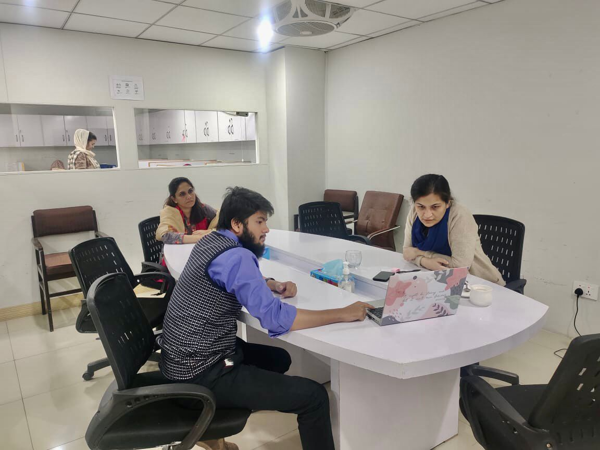
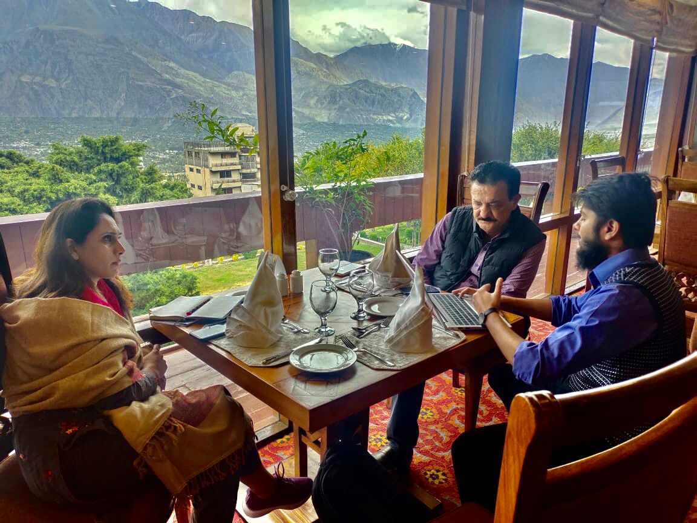
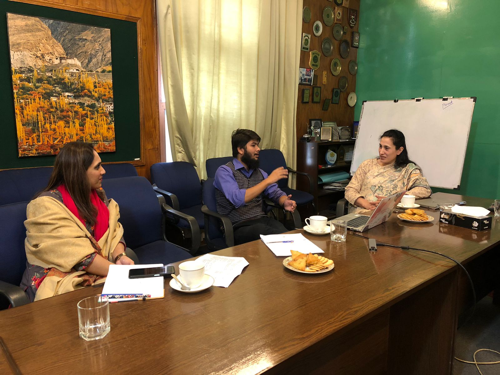
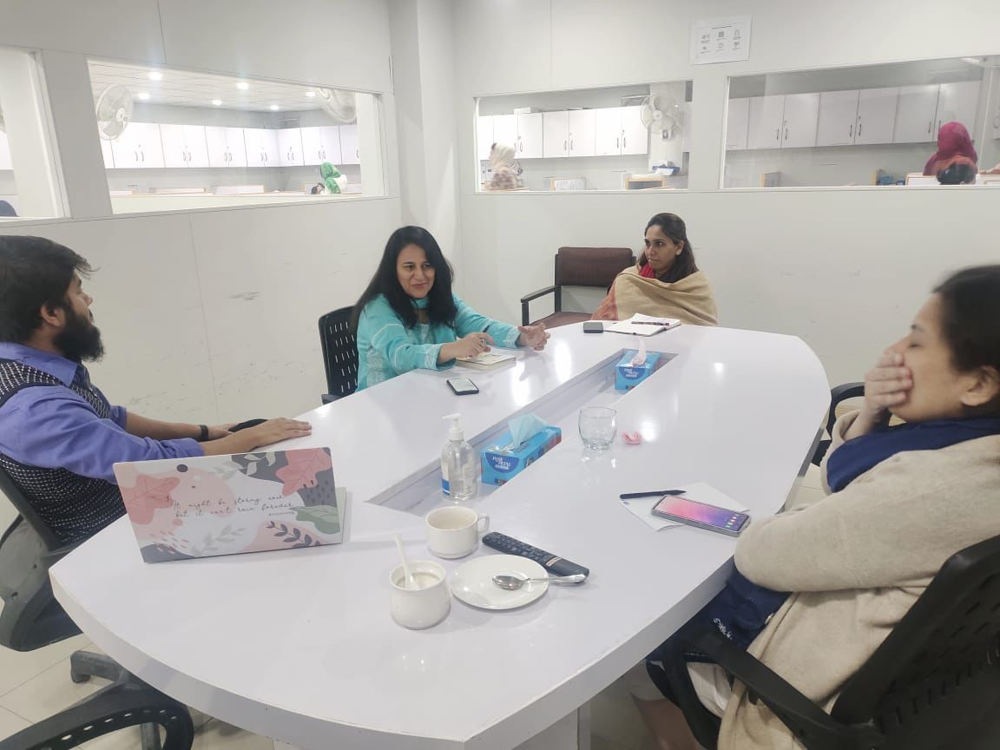
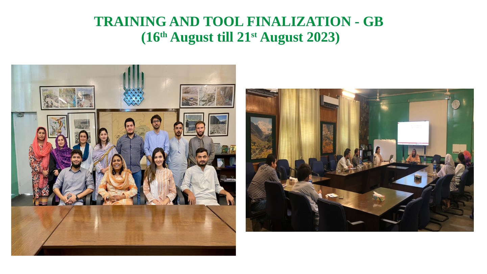
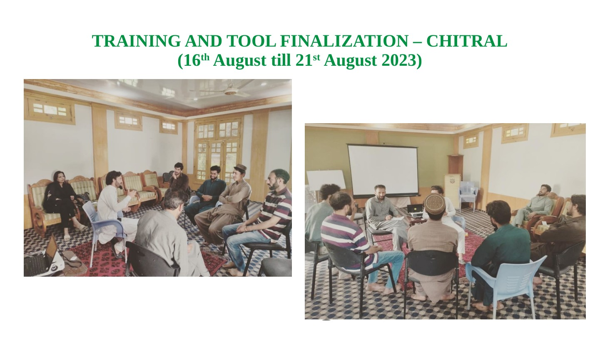

The Aga Khan UniversitySehatmand Khandan (SMK) Endline Research
SEXUAL & REPRODUCTIVE HEALTH • FAMILY PLANNING • QUALITATIVE ENDLINE RESEARCH
Sehatmand Khandan Project
A qualitative endline research project focused on sexual and reproductive health (SRH) and family planning in
Gilgit-Baltistan, Chitral, and Sindh, Pakistan. The study explored the effectiveness of previous interventions,
documented community and provider perspectives, and generated evidence to guide future SRH and family-planning work.
The Sehatmand Khandan project aimed to strengthen understanding, access, and uptake of sexual and reproductive
health and family-planning services in underserved areas. The endline research examined perceptions, lived
experiences, barriers, and areas for future improvement after project interventions had already been introduced.
Study typeQualitative endline research with descriptive, phenomenological, and exploratory components
GeographiesGilgit-Baltistan, Upper & Lower Chitral, and Sindh
Target groupsMarried men and women, adolescent girls and boys, healthcare workers, community stakeholders, and intervention beneficiaries
MethodsFocus group discussions, in-depth interviews, field coordination, transcription, coding, and thematic analysis
AnalysisManual review with NVivo-supported content and thematic analysis
My role and work contributed
Research coordination
Supported planning, day-to-day coordination, and execution of endline research activities across the project setting.
Tool development & review
Contributed to finalization and refinement of qualitative interview guides, discussion guides, and field documentation tools.
FGDs & in-depth interviews
Supported and coordinated focus group discussions and in-depth interviews across different participant groups and regions.
Training & field preparation
Participated in training, field-team orientation, and preparation for data collection in Gilgit-Baltistan and Chitral.
Data management & qualitative analysis
Contributed to organization of field data, translation/transcription processes, quality checks, coding, and analysis using NVivo-supported workflows.
Reporting & evidence generation
Helped translate field evidence into actionable findings and documentation for future SRH/FP programming and decision-making.
Study design, focus groups, and in-depth interviews
Focus group discussions
FGDs were used to understand community perceptions, social norms, and experiences among married men, married women, adolescent boys, and adolescent girls.
In-depth interviews
IDIs captured richer individual perspectives from healthcare providers, project staff, community-level actors, religious scholars, mobilizers, and intervention beneficiaries.
Qualitative analysis
Data were translated and transcribed into English, reviewed repeatedly, coded for meaning, and analyzed thematically to derive key themes and recommendations.
Program areas and target districts
The study covered selected districts in Gilgit-Baltistan, Chitral, and Sindh, including Ghizer, Gilgit, Hunza,
Nagar, Astore, Diamer, Skardu, Ghanche, Kharmang, Shigar, Upper Chitral, Lower Chitral, Badin, and Matiari.
Evaluate improvement in understanding of SRH and family planning among women, men, adolescents, and youth.
Assess empowerment and reproductive rights awareness without coercion, discrimination, or violence.
Review the effectiveness of interventions and identify what should be sustained, adapted, or scaled.
Generate evidence to support future programming, strategy refinement, and policy dialogue.
Fieldwork and team moments

Project discussion and coordination meeting during SMK research activities.

Field coordination and stakeholder discussion in a project setting connected with regional implementation.

Debriefing and planning conversation linked to qualitative research implementation.

Team meeting supporting qualitative fieldwork, coordination, and project decision-making.
Training and tool finalization
The project also involved training, team-building, and tool-finalization sessions to prepare field staff and
strengthen the quality of qualitative data collection across regions.

Training and tool finalization in Gilgit-Baltistan (August 2023).

Training and tool finalization in Chitral (August 2023).
Why this project matters
The project generated practical evidence on how SRH and family-planning interventions are experienced at the
community level. It supported understanding of awareness, access barriers, service utilization, and community
attitudes, while helping identify what works, what should be improved, and what can be scaled in future programs.